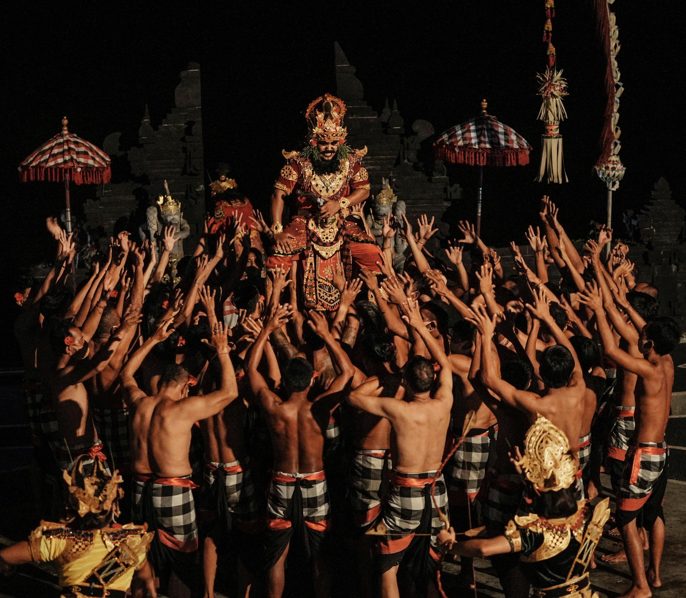
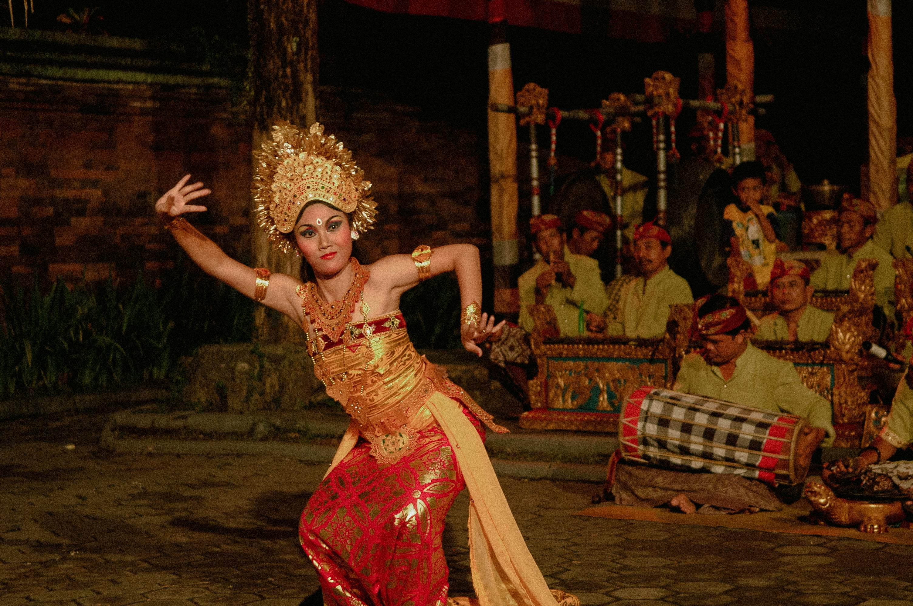
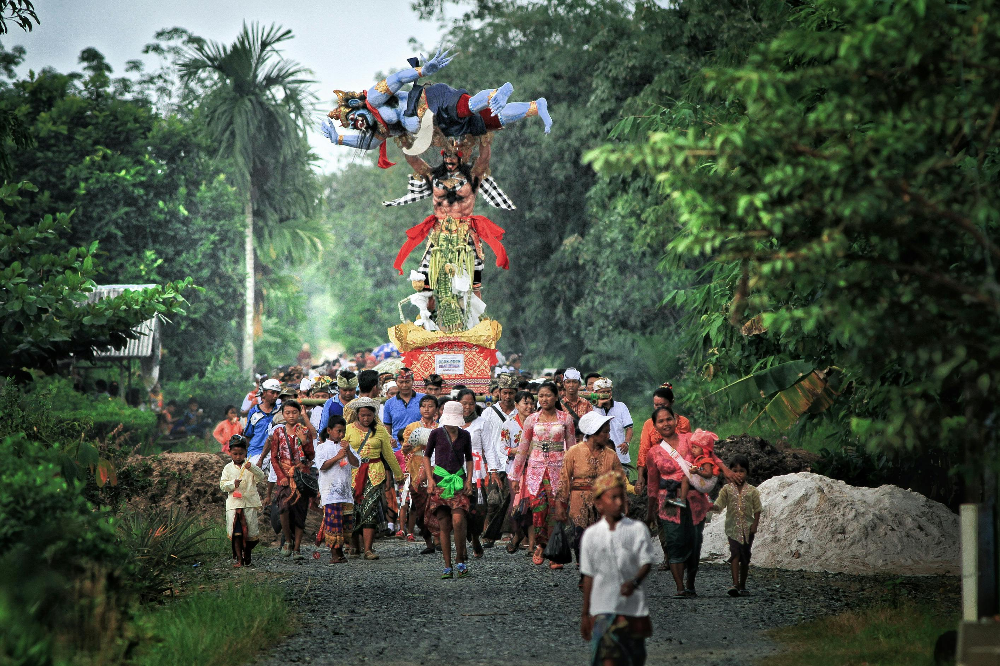
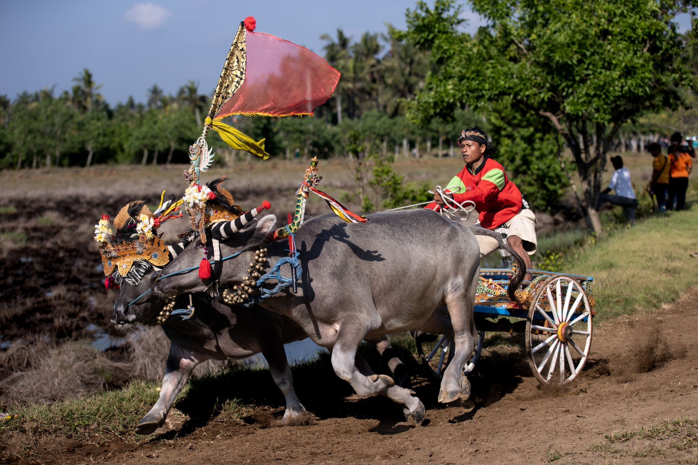
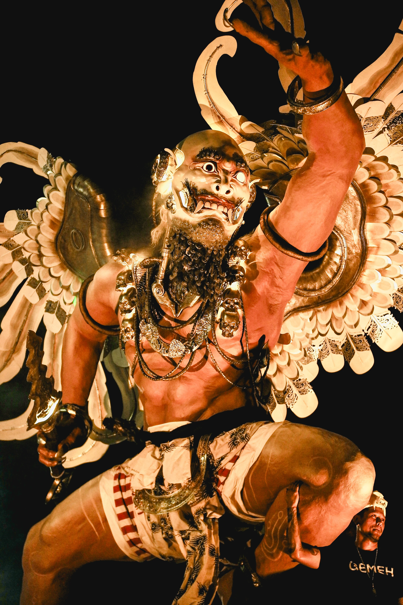
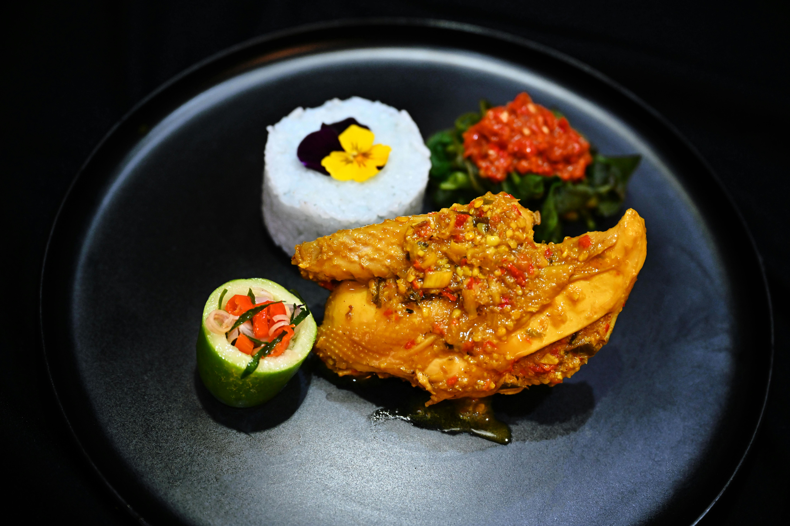
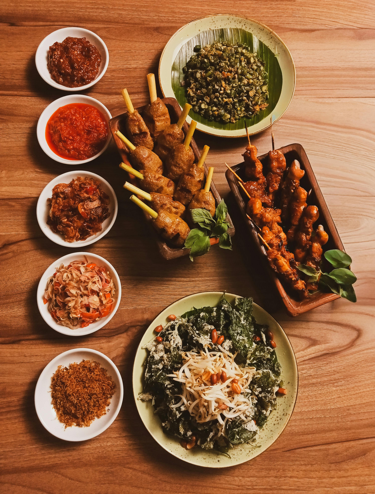
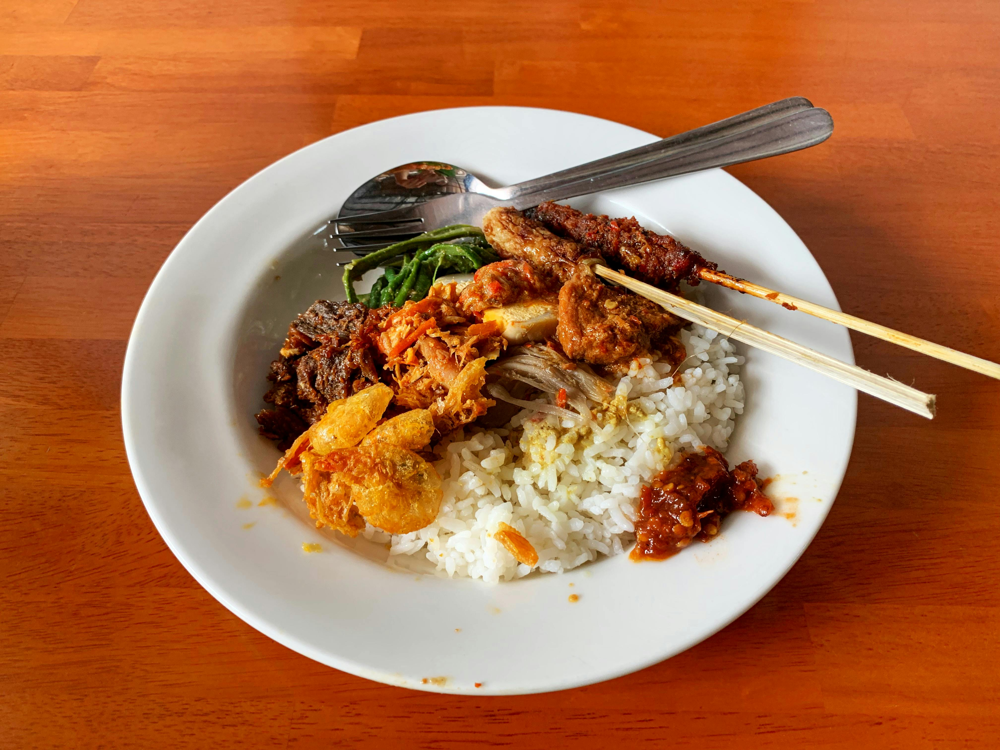

KULINER & KESENIAN
BALI
Bali adalah sebuah pulau di Indonesia yang terkenal dengan ornamen alamnya yang indah, budaya yang sangat kental, serta keseniannya yang eksotis. Pulau ini sering disebut sebagai Pulau Dewata karena spiritualitasnya yang magis.
KESENIAN BALI
Seni pertunjukan dan tradisi di Bali bukan sekadar hiburan visual, melainkan sebuah bentuk persembahan suci dan bagian tak terpisahkan dari ritual spiritual masyarakat Dewata. Setiap gerakan tari yang dinamis, tabuhan gamelan yang magis, hingga ritual adat yang diwariskan turun-temurun, merajut harmoni mendalam antara manusia, alam, dan Sang Pencipta.





Tradisi Ogoh-Ogoh
Prosesi mengarak patung raksasa simbol unsur negatif untuk menyucikan diri dan lingkungan menjelang Hari Raya Nyepi.
Tari Legong
Tarian klasik Bali yang anggun dan dinamis, terkenal dengan gerakan mata ekspresif serta kelenturan tubuh penarinya.
Tari Kecak
Seni pertunjukan drama tari kisah Ramayana yang diiringi seruan ritmis puluhan pria tanpa alat musik.
Tradisi Balapan Kerbau
Ajang balap sepasang kerbau khas Jembrana sebagai wujud syukur dan kegembiraan petani atas hasil panen.
KULINER KHAS
Cita rasa otentik dari Pulau Dewata. Perpaduan bumbu rempah tradisional (basa genep) yang diwariskan turun-temurun, menciptakan simfoni rasa yang tak terlupakan.
Cita rasa otentik dari Pulau Dewata. Perpaduan bumbu rempah tradisional (basa genep) yang diwariskan turun-temurun, menciptakan simfoni rasa yang tak terlupakan.

Ayam Betutu
Ayam utuh yang dipanggang lambat dalam sekam dengan bumbu genep pedas. Teksturnya sangat lembut dengan aroma rempah yang meresap sempurna.

Sate Lilit
Daging cincang berbumbu yang dililitkan pada batang serai, kemudian dipanggang di atas bara api. Menghasilkan perpaduan rasa gurih dan harum serai.

Nasi Campur Bali
Sajian lengkap berisi nasi dengan ragam lauk pauk tradisional seperti lawar, ayam sisit, sate lilit, dan sambal matah yang segar menggigit.